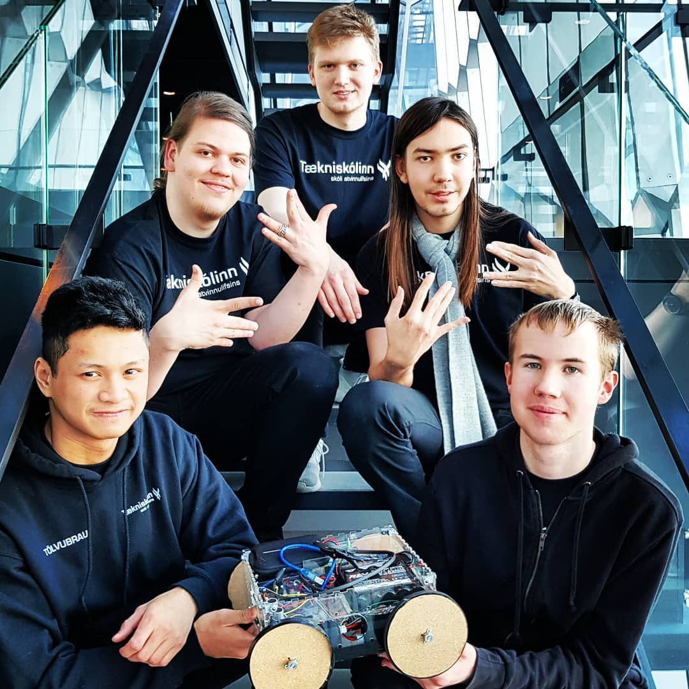

Í áfanganum kynnast nemendur vélmennum, hvað er vélmenni og hvaða tækni er notuð. Nemendur kynnast lausnaraðferðum, verkefnastjórnun, samvinnu og að nýta sér þá þekkingu í stærðfræði, eðlisfræði og forritun sem þeir hafa þegar vald á.
Í seinni áfanganum byggja nemendur og forrita vélmenni til að leysa hinar ýmsu þrautir. Í áfanganum gera nemendur stórt verkefni sem nemendur hanna sjálfir með annað hvort VEX eða Arduino smátölvum.
Nemendur okkar hafa tekið þátt í keppnum First Global sem er heimsmeistarakeppni í vélmennagerð fyrir fólk á aldrinum 15 til 18 ára. Fyrsta keppnin var haldin 2017 í Washington D.C. Nemendur á tölvubraut hrepptu svo 2. sætið í keppninni 2018 í Mexíkó. Flottir nemendur sem bera náminu á tölvubraut skólans gott vitni.
First Global
Nemendur okkar tóku þátt í Hönnunarkeppni HÍ 2018 sem er á vegum tækni og verkfræðideildar Háskóla Íslands. Liðið okkar kallaði sig Tölvubraut og endaði í 6. sæti af 12 sem er mjög gott af framhaldsskólanemum enda erum við stolt af þeim. Við stefnum að því að taka þátt sem oftast.
Keppnin